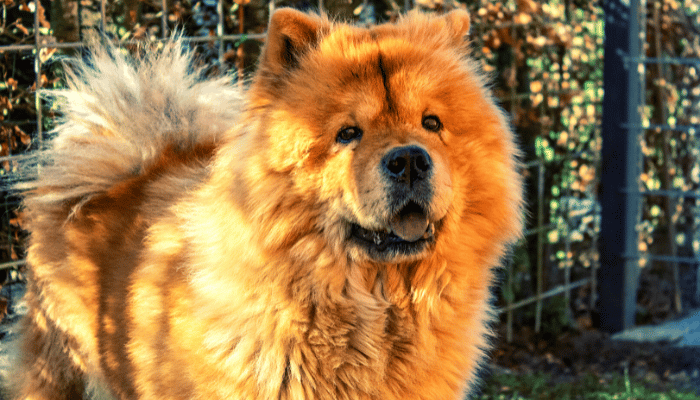

Raça de porte médio bastante utilizada como cão de guarda e companhia. É impossível não se encantar pela beleza do Chow Chow. Além de fofo, o cãozinho dessa espécie é conhecido pela linguinha azul e por ser bem educado, elegante e super calmo. Ele também costuma ser leal ao tutor, além de super protetor e independente. O pet dessa raça possui porte médio, robusto e musculatura forte. É muito esperto e, se treinado, tende a desenvolver diferentes tarefas. O Chow Chow também pode ser excelente como cão de guarda.
Quem escolhe adotar um Chow Chow, precisa conhecer mais sobre o porte físico do seu futuro amiguinho. A espécie é conhecida por sua aparência semelhante a de um leão, com pêlos volumosos e corpo altivo. Mas, não é só nisso que a raça lembra o rei da selva. Ela é bem orgulhosa e reage a situações de ameaça. Esse amiguinho chama a atenção por seu porte mediano e aparência elevada. Além disso, tende a ser bem obediente e, se acostumado desde filhote, pode ser um ótimo companheiro de aventuras.
O processo de socialização é bem simples, mas é fundamental que comece logo nos primeiros dias de vida do Chow Chow, já que só assim a adaptação terá resultados positivos em menor tempo. Portanto, ao adotar seu amigão, procure já começar com os treinamentos. Outra dúvida frequente entre os tutores é quanto ao melhor espaço para seu pet. No caso do Chow Chow, apesar do porte mediano, ele costuma se adaptar em casas ou apartamentos sem problemas.
Fizemos um gráfico nivelando de 0 a 5 as características da raça, veja a baixo!
Conhecido por sua aparência elegante e nobre, o cachorro Chow Chow possui uma estrutura com crânio achatado e largo. Além disso, contém um focinho que termina em uma grossa trufa de coloração preta ou clara, dependendo da pelagem. Ele possui a cauda sempre dobrada para o alto e mantida em cima do dorso. Esse, aliás, é curto e robusto. O pelo desse cãozinho precisa de cuidados especiais. Como é longo, felpudo, denso e reto, o recomendado são escovações diárias, para evitar nós, que podem gerar incômodo aos pets. Com porte mediano, esse bichinho possui quadril geneticamente modificado para ser maior e mais forte.
Algumas precauções são essenciais para manter a vida do pet sempre saudável. Por ser um bichinho com muito pelo, o Chow Chow precisa de banho e tosa regular, pelo menos uma vez por semana ou a cada quinze dias. As orelhinhas também merecem atenção especial. Então, evite deixar acúmulo de cera e outros resíduos que podem causar infecção e doenças mais graves. Então, sempre que for dar banho no pet, higienize as orelhas, assim, o procedimento entra na rotina do bichinho. Apesar de super resistente quanto a problemas de saúde, o Chow Chow, assim como qualquer pet, precisa de cuidados para evitar algumas doenças. Ou seja, as consultas ao médico-veterinário são fundamentais e precisam ser feitas regularmente. Comum em todo cão de porte médio ou grande, doenças no quadril, como a displasia, costumam acontecer com frequência. Portanto, o tutor precisa evitar que esse cãozinho faça atividades exaustivas e acabe se machucando ainda mais, principalmente se já estiver em idade mais avançada.
Assim como todo cachorrinho nos primeiros dias de vida, o filhote de Chow Chow precisa de cuidados especiais para garantir um desenvolvimento muito mais saudável e tranquilo. Por isso, o primeiro passo é saber tudo sobre a saúde do bichinho, como o estado das vacinas e vermifugação. Além disso, é normal que o cão se sinta um pouco tímido e deslocado nas primeiras semanas. Mas, com todo o carinho e atenção necessários, o pet vai se acostumar logo logo e retribuir com muita lealdade e proteção. Vale lembrar que, para que o doguinho se sinta seguro e fique longe de acidentes, é essencial fazer algumas adaptações quanto aos locais que possam oferecer risco pela casa. Então, procure usar portões específicos e barreiras próprias para cachorro, assim, a proteção estará garantida!